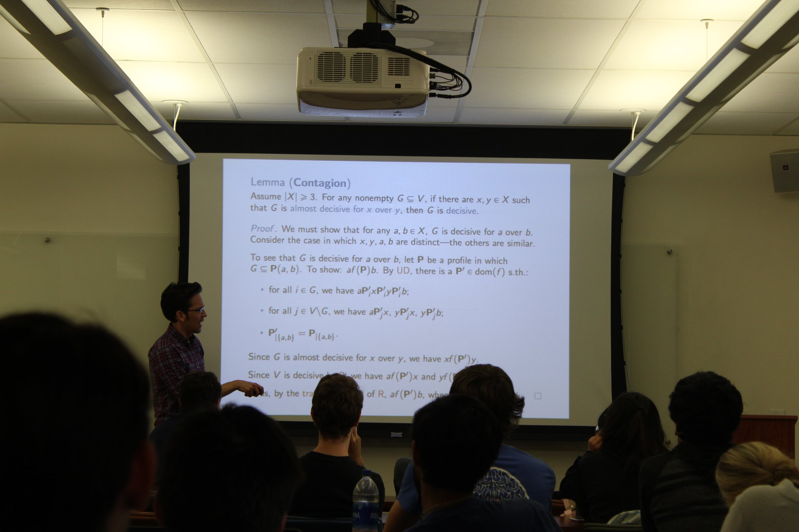

The Math Monday undergraduate lecture series is the flagship event of MUSA. It is a series of talks, every Monday at 5 PM, given by professors and other academics about mathematical research and special topics.
Rikhav Shah
7 October — 1015 Evans
When showing constructions with particular properties exist, it is tempting to start trying to construct something with those properties. One alternative approach is to randomly construct something and show there’s a nonzero probability it ends up with the desired properties. Sometimes, this perspective can lead to algorithms which are guaranteed to produce `good’ constructions.
Madeline Brandt
30 September — 1015 Evans
Tropical geometry is a new and exciting field of math which creates a link between algebraic geometry and combinatorics. As a result of this connection, surprising insights have developed in both areas. In this talk, I will show you how to carry out the tropicalization process for curves. This takes in an algebraic curve, and associates to it a metric graph. Even in this low-dimensional case, it is not easy to state a general algorithm. I will present a result for doing this in the special case of superelliptic curves.
Sung-Jin Oh
23 September — 1015 Evans
Abstract: Nonlinear hyperbolic/dispersive partial differential equations (PDEs) underlie the description of many wave phenomena in physics, such as the propagation of sound, light and gravity (i.e., gravitational waves). I will introduce a central theme in the analysis of such PDEs, namely, the tension between the stabilizing dispersive effect of the linear part and the (possibly) catastrophic effect of the nonlinear part. As an example of this theme, I will describe my recent work with D. Tataru on singularities of the energy-critical Yang-Mills equation.
Richard Borcherds
16 September — 1015 Evans
Abstract: A (possibly apocryphal) quote from Martin Eichler says that "There are five elementary arithmetical operations: addition, subtraction, multiplication, division, and modular forms". This talk will explain what a modular form is and given some examples of how they can be used to do things such as prove Fermat's last theorem, find the best sphere packings, and understand the monster sporadic simple group.
Ken Ribet
9 September — 1015 Evans
Abstract: I will explain the proof of Sophie Germain's theorem to the effect that the first case of Fermat's Last theorem is true for exponent p if p is a prime number such that 2p+1 is also a prime. Such primes are now known as Sophie Germain Primes.
Prof. Bernd Sturmfels
4 February — 1015 Evans
Abstract: We seek to determine a real algebraic variety from a fixed finite subset of points. Existing methods are studied and new methods are developed. Our focus lies on aspects of topology and algebraic geometry, such as dimension and defining polynomials. All algorithms are tested on a range of datasets and made available in a Julia package.
Java Darleen Villano
To do mathematics is to prove or disprove an array of statements. Occasionally, such statements involve the explicit construction of an object (e.g. a maximal ring ideal, a vector space basis, etc.). This talk will serve as a rough introduction to the research program known as “reverse mathematics”, where we examine which axioms and principles are necessary to permit such constructions.
Marina Iliopoulou
A Kakeya set in Euclidean space is a set containing a unit line segment in each direction. The problem of determining that, in some form or other, Kakeya sets are large appeared about a century ago, and lies at the heart of harmonic analysis today, with various applications in many mathematical areas. In this talk we will discuss this problem and see how its study has affected modern harmonic analysis and incidence geometry.
Wesley Holliday
Given a group of individuals each with a ranking over some set of options, how can the individuals’ rankings be combined to form a group ranking of the options? Is there a method of combination that satisfies reasonable axioms? I’ll give a crash course on these questions from the mathematical theory of social choice. In particular, I’ll give a quick proof of the most famous result in the field, Arrow’s Impossibility Theorem, which shows that several apparently desirable axioms for combining individual rankings are jointly inconsistent for a finite group of individuals. Finally, we’ll see that these axioms become consistent if we allow the group of individuals to be infinite.
Ian Agol
We’ll discuss various questions about coloring maps on surfaces. It is well-known that coloring a map on a surface can require more than four colors (with appropriate assumptions, e.g. connectivity of the countries). We’ll consider whether a finite map on a surface can admit a 4-coloring in a finite-sheeted cover.
Catherine Cannizzo
I will describe my thesis work in understanding an example of a six dimensional manifold, a symplectic manifold, through a concept arising from string theory known as mirror symmetry.
Aidan Backus
Since the discovery of HIV as the etiological agent of AIDS, mathematical biologists have studied HIV and other viruses through the new branch of applied mathematics known as viral dynamics. We'll present a candidate model for the spread of HIV in a community, which incorporates the probability of transmission as a function of infection age. Knowledge of differential equations, chemical kinetics, and probability would be nice, but is certainly not necessary.
James Leng
In dynamical systems, one of the first examples one considers are rotations by an irrational multiple of pi. We give a construction of a transformation on the real line that has many of the same measure theoretic properties as the irrational rotations on the circle.
Brian Burks
A electrical network is a weighted graph, with some vertices “internal” and the rest “boundary”, and edge weights corresponding to conductances.
In this talk, we will present the basics of electrical networks, characterize some useful properties of a special subset of networks, and (time permitting) present open problems in the subject.
No background is required.
Clark Lyons
A planar graph is a set of vertices and edges between them that you can draw in the plane without crossing edges. Kuratowski's theorem gives a surprisingly simple condition for a graph to be planar. In this talk, we will see how to tell if a graph is planar and why every map can be colored with four colors without adjacent regions being colored the same. No advanced background is required.
Brent Nelson
25 April, 2018—939 Evans
Random matrix theory is a field of mathematics that blends probability theory and linear algebra. It was originally developed by Wigner to model heavy nuclei of atoms, but today offers applications to many other areas of math and science. In this talk, I will provide an introduction to random matrix theory and discuss a surprising application to genetics and cartography.
Note the special time of 5:00-6:00pm on Wednesday; you might call this Math Monday + 2.
Craig Evans
23 April, 2018—939 Evans
I will discuss how to use certain nonlinear PDE to design optimal strategies for game problems involving differential equations and will in particular explain applications to the homicidal chauffeur problem.
Semyon Dyatlov
16 April, 2018—939 Evans
We will study several mathematical ways to describe when a given dynamical system exhibits chaotic, or unpredictable, behavior, such as the notions of ergodicity and mixing. These concepts will be illustrated on several examples, both basic (where I will attempt to give a rigorous proof of ergodicity) and more interesting ones, such as chaotic billiards (which will be demonstrated by numerical simulations).
Sug Woo Shin
9 April, 2018—939 Evans
This is a gentle introduction to the Langlands program based on the developments of reciprocity law. Some attention will be drawn to the birth of the Langlands program in a letter of Langlands to Weil in 1967. Time permitting a snapshot of some current developments may be given.
Jenny Harrison
2 April, 2018—939 Evans
Plateau’s problem asks if there is an area minimizing surface spanning a given boundary curve. Roughly speaking, the competing surfaces must contain the curve and not have any holes. Is there an area minimizer amongst the class of all such surfaces? Jesse Douglas was awarded one of the first Fields medals in 1936 for his solution of Plateau’s problem. Federer and Fleming were awarded the Steele Prize for their 1960 solution. Reifenberg produced a completely different solution, also in 1960. We will briefly discuss how these papers were independent of each other and solved special distinct cases. Most mathematicians believe this was the end of the story. But was there anything significant left to do? We will answer this question in the affirmative and describe some recent results arising from a flurry of interest in the last four years. The talk should be accessible to students who have studied real analysis, although some simple algebraic topology will be invoked to say what it means for a surface to span a given boundary.
Eric Chen
19 March, 2018—939 Evans
Studying the properties of the integers is interesting, but also very hard. Sometimes, instead of staring at lots of equations and identities, it helps to draw a geometric picture of what's going on. In this talk, I will introduce enough fancy words (not that many) to explain how one could think of quadratic reciprocity geometrically. If there's extra time, I'll also say something about more general rings of integers.
Marc Rieffel
12 March, 2018—939 Evans
I will indicate some issues in high-energy quantum physics that suggest the need for a definition of a “quantum metric space”, and then I will proceed to show how to obtain a useful definition, concentrating on “compact” (and “finite”) ones. I will indicate many examples. If time allows, I will also indicate how to define the distance between compact quantum metric spaces, with examples. This is a relatively new topic, with many aspects remaining to be explored.
Useful background for my talk is Math 104, 110, and a bit of 113, but this is not necessary. No physics background is needed (though it would be a bit helpful).
Srivatsav Kunnawalkam
5 March, 2018—1015 Evans
(Note that this Math Monday will occur at 4 PM!)
Hilbert, way back in 1900, knew about fruit ninja. Indeed he posed the problem, also known as Hilbert's 3rd problem: "Can you fruit ninja a fruit in the shape of a regular tetrahedron, into a fruit in the shape of a cube?". In this talk, we will attempt to solve this problem using a powerful tool known as linear algebra. We will then discuss about other such questions which involve finite decompositions and reassembling of subsets of $R^n$.
James Walsh
26 February, 2018—939 Evans
Hilbert's Program was an early twentieth century research program with two goals: (i) axiomatize mathematics and (ii) prove the consistency of the axioms by indubitable means. Interest in Hilbert's Program waned after Gödel's discovery that, roughly, no interesting axiomatic theory can be proved consistent on the basis of indubitable means. This discovery sowed the seeds for a refined version of Hilbert's Program known as ordinal analysis. In ordinal analysis, the strength of axiomatic theories is measured and compared by determining what principles are necessary and sufficient for proving their consistency. I will provide a non-technical introduction to the subject with no background knowledge assumed.
Clark Lyons
11 February, 2018—939 Evans
In the 19th century, George Cantor first showed that some infinite sets are larger than other infinite sets. He showed that the size of the set of real numbers is larger than the size of the set of natural numbers, but he left open the question of how much larger. It turns out that this question lies at the foundation of mathematics, and determining exactly how large the continuum can be motivated much of the set theory research done in the 20th century. In this talk we will see what the current state of “continuum problem” is. No prerequisite knowledge assumed.
Sung Hyup Lee
5 February, 2018—939 Evans
Ramsey's theorem provides a generalisation of the classic pigeonhole principle. This aspect of infinitary combinatorics, which tells us when certain homogeneity properties hold given certain conditions, has lent itself naturally to a slew of results in logic and the foundations of mathematics. In this talk, I plan to give a brief and friendly survey of this interaction.
John R. Steel
29 January, 2018—1015 Evans
We consider games of the following sort. There are two players, I and II, and a payoff set $A$. The players alternate making moves, and at the end of the game have produced an infinite sequence s of moves. Player I wins if and only if $s$ is in $A$. This game is called $G_A$, and it is said to be determined if one of the two players has a winning strategy.
For which $A$ is $G_A$ determined? The question turns out to be a basic one in the foundations of mathematics. Its answer is intimately connected to the existence of infinities much larger than the countable infinity involved in the description of the game.
We shall explain this connection further, in a non-technical talk aimed at a general audience.
Silvain Rideau
20 November, 2017—740 Evans
In many ways, a field of characteristic zero behaves like a field of large positive characteristic. For example, if the characteristic of a field K is zero or prime to m, then the polynomial X^m - 1 only has simple roots. In this talk, we will explain how, using the tools of logic, this observation can be formalized and how one can actually prove that characteristic zero behavior is the limit for large p of characteristic p behavior. We will then use this to prove a result of Ax on polynomial maps over the complex numbers.
Robert M. Anderson
13 November, 2017—740 Evans
The commercially dominant models for estimating risk in stocks require an army of analysts reading accounting data to classify individual stocks' exposures to predefined risk factors. We discuss a simple machine learning method, based on linear algebra and optimization, that may have the potential to disrupt these models.
David Aldous
6 November, 2017—740 Evans
Teaching Probability as mathematics without any reference to data is (arguably) foreign to the spirit of the 21st century. One interface between Probability and readily available data involves Elo-type rating algorithms for sports teams. Combined with a model for win/lose with given strengths, and a model for time-varying strengths, one gets a model within which one can compare observed algorithmic ratings to unseen strengths. In particular, the sentence ``ratings tend to converge on a team’s true strength relative to its competitors after about 30 matches” has been widely copied online. Is there any theory or data to support this assertion?
Richard Bamler
30 October, 2017—740 Evans
This talk will be about the fruitful interplay of three different mathematical fields — topology, geometry and analysis. The talk will consist of two parts. In the first, more classical part, I will introduce the concept of a Riemannian manifold. I will then explain how the topology and the geometry of a Riemannian manifold are related to one another. In dimensions 2 and 3, this relationship will even give us a way of classifying all possible topologies. This classification in dimension 3 is called the “Geometrization Conjecture” and it was just recently proven by Perelman. In the second part of the talk, analysis will enter the picture. I will introduce the Ricci flow, which is a method of “spreading out” curvature similar to a heat equation. I will then sketch how Perelman used the Ricci flow to prove the Geometrization Conjecture. If time permits, I will also discuss some more recent results and open questions.
Carolyn Abbott
23 October, 2017—740 Evans
A group is an algebraic object, but it also possible (and useful!) to study the geometry of a group. To do this, we need to understand what a group looks like. In this talk, I will introduce a way to “draw a picture” of a group, and we will discuss what can be said about the group depending on the geometry of the picture.
Kat Christianson
16 October, 2017 at 6 PM—740 Evans
Homology is a powerful algebraic tool that arises naturally in a wide range of different areas of modern mathematics. The main goal of this talk is to provide an introduction to how homology theories are defined and how they are used in practice. We will focus on two standard homology theories in algebraic topology as examples. After laying some theoretical foundations for these two homology theories, we will consider a couple applications of those foundations to questions in geometry and commutative algebra.
Alexander Youcis
9 October, 2017—740 Evans
The Fibonacci sequence has, in the past decade or so, taken on an almost meme like quality. That being said, it is an interesting sequence of integers, the structure of which can get surprisingly complex. We will be interested in this talk in what sort of periodicity properties the Fibonacci sequence has. Of course, this can’t be the normal notion of periodicity (since the Fibonacci sequence is increasing). Instead, we mean the periodicity of the sequence modulo a prime p. It turns out that the study of such a problem naturally leads one to consider slightly more sophisticated problems in number theory and algebra.
Jeremy Lovejoy
1 October, 2017—740 Evans
A partition of n is a non-increasing sequence of natural numbers whose sum is n. The study of partitions goes back to Euler, who proved the original partition identityu. For any n, the number of partitions of n into distinct parts is equal to the number of partitions of n into odd parts. Another famous partition identity is the first Rogers-Ramanujan identity, which says that for all n, the number of partitions of n into parts which differ by at least two is equal to the number of partitions of n into parts congruent to 1 or 4 modulo 5. (Try it for some small values of n to see that it works!) While these two partition identities have similar statements, one is much deeper than the other. In this talk I will discuss the proofs of these identities, the search for a generalization, and some unsolved problems.
Sri Kunnawalkam Elayvalli
25 September, 2017—740 Evans
I will talk about problems in mathematics that are so easy to state that even your grandmother can understand them, but are so difficult to solve that no one ever in history has solved them. The interesting thing about the problems I will present is that they are not very famous in the public eye (unlike the twin prime conjecure, Goldbach's conjecture, the abc conjecture, and so on). The platter will include problems of various different flavors, like numbers, sets, triangles, points, sums, etc.
Professor Richard E. Borcherds
11 September, 2017—740 Evans
Beyond the usual numbers 0, 1, 2, 3, ..., lie Cantor's countable ordinal numbers ω, ω+1, ..., ω+ω, ..., ε0, .... In some way their arithmetic is similar to the natural numbers; one can add, multiply and raise them to powers and define primes and so on. However in other ways their arithmetic looks a little strange; for example, 1+ω < ω+1.
Bernd Sturmfels
12 September, 2016
Eigenvectors of square matrices are central to linear algebra. Eigenvectors of tensors are a natural generalization. The spectral theory of tensors was pioneered about a decade ago, and has since found numerous applications, but it is also intimately connected to classical questions in optimization and dynamics. We present an introduction to this theory.
Julian Chaidez
19 September, 2016
Suppose that you are given paper cutout instructions for a very large looking polyhedron, with many sides. How could you distinguish between a real set of instructions, which describes a polyhedron that can actually be constructed, and fake set of instructions, which appears valid at a glance but actually described an unbuildable shape?
Christopher Eur
26 September, 2016
The Global Attractor Conjecture (GAC) is a fundamental conjecture in chemical reaction network theory (CRNT) that has eluded proofs for decades despite appearing intuitively obvious. In this talk, we introduce CRNT following works of Jackson, Horn, and Feinberg, and discuss its ties to algebraic geometry and convex geometry. We conclude with a sketch of the recently proposed proof of GAC.
Sander Mack-Crane
3 October, 2016
Starting from prime numbers, we'll discuss one of the motivating problems in number theory, and how it connects to Galois theory and then to Galois representations. This sets us up for a gentle overview of what the Langlands program is all about. As an example we'll discuss the simplest case, known as class field theory. Knowledge of abstract algebra will be helpful.
Qiaochu Yuan
10 October, 2016
In this talk, we'll describe a surprisingly useful result from group theory that can be applied to prove many of the basic results in elementary number theory. We'll start with Fermat's little theorem and Wilson's theorem and work our way up from there. Time permitting we may make it all the way up to quadratic reciprocity.
Martin Olsson
17 October, 2016
I will discuss some of the algebraic aspects of ordinary linear differential equations. While the theory of such equations, as presented for example in math 1B, is analytic in nature involving things like the derivative and limits, one can, in fact, study such equations more algebraically over the rationals, or even finite fields.
Mahrud Sayrafi
24 October, 2016
In this talk we will see how almost all aspects of cryptography essentially boil down to studying functions that are easy to compute but hard to invert without some extra information. While analyzing these functions often involves tools from statistics or computer science, the problems at the core are mathematical in nature, and in fact, you have known all of them since precalc.
Maciej Zworski
31 October, 2016
Classical chaos was famously described by Edward Lorenz (of butterfly effect fame) as the situation when the present determines the future, but the approximate present does not approximately determine the future. I will illustrate that by some example and also, for contrast, show completely integrable systems (that is, predictable systems).
Christopher O'Neill
7 November, 2016
The fundamental theorem of arithmetic states that every integer factors uniquely as a product of primes. Non-unique factorization theory examines settings where uniqueness of factorization fails to hold (that is, settings in which every element can be factored, but possibly in more than one way). This relatively new field has many algebraic and combinatorial aspects.
Craig Evans
14 November, 2016
I will first discuss the Newtonian, the Lagrangian and the Hamiltonian interpretations for the dynamics of a particle moving in a conservative field of forces, and explain how to extract interesting information such as conservation laws and the Virial Theorem. I will then generalize to weak KAM (= Kolmogorov, Arnold, Moser) theory.
Vera Serganova
28 November, 2016
I will give a brief introduction to superalgebras and illustrate on examples how they appear in different areas of mathematics. My examples will include the proof of Amitzur-Levitski identity, the duality between orthogonal and symplectic groups and de Rham complex. We will also discuss the notion of supertrace.
Cailan Li
30 January, 2017
In this talk we will first give a crash course in complex analysis and then talk about the beautiful Riemann zeta function and its generalization. We will then talk about the shiny objects known as modular forms, and some of their applications. In particular, we will discuss the role modular forms played in Andrew Wiles' proof of Fermat's Last Theorem.
Alex Carney
6 February, 2017
Local fields are a formalization of the idea that often in number theory, problems are easier to solve mod p than over the integers or the rationals. We'll start by defining the p-adics, the most common example of a local field, and describe some of their strange and interesting properties. At the end, I will briefly point to some exciting modern directions in the study of local fields.
Richard Borcherds
13 February, 2017
This talk will describe how to classify things like the 18 archimedean solids and the 17 wallpaper groups using orbifolds.
Jeff Hicks
27 February, 2017
A lot of my intuition for mathematics comes from drawing pictures of the problem I want to solve. As a topologist, this means trying to come up with clean visual representations of various topological spaces. A good drawing for a space should ideally be mathematically motivated and intuitive.
Peter Teichner
20 March, 2017
I'll give a classification of manifolds up to dimension 4.
Mariusz Wodzicki
10 April, 2017
A set is generally considered to be the simplest structure of Mathematics. Every set comes disguised under a number of other structures, however. While exploring some of them, we shall encounter what I propose to call a quantum set, in analogy to quantum groups.